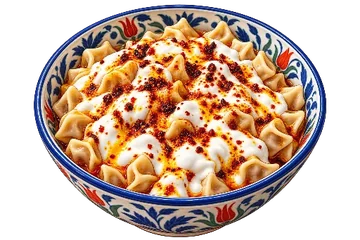
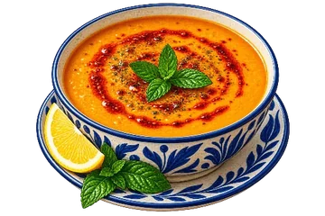
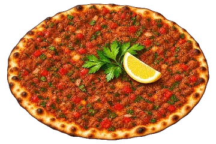
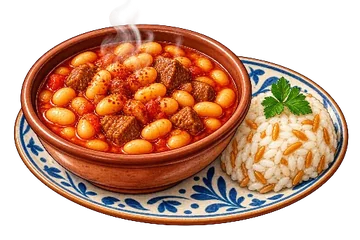
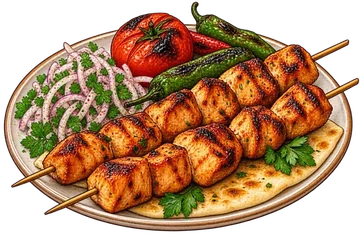
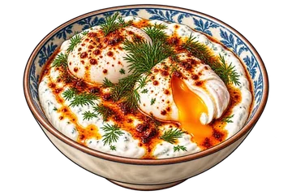

Three taps between hungry and cooking.
Açlıkla ocak arasında üç dokunuş.
Fill your pantryDolabını doldur
Tick off what you have. Ingredients are grouped into nineteen searchable categories, so it takes a minute, not an evening.
Elinde ne varsa işaretle. Malzemeler on dokuz aranabilir kategoriye ayrılmış; bu iş bir akşam değil bir dakika sürüyor.
See what is really possibleGerçekten yapabileceklerini gör
Recipes you can cover come first, and the ones you nearly have show exactly what is missing. You decide instead of guessing.
En çok malzemesini karşıladığın tarifler öne çıkar; az kalanlarda neyin eksik olduğunu baştan görürsün. Tahmin etmezsin, karar verirsin.
Cook with your hands fullEllerin doluyken pişir
Cooking mode keeps the screen awake and walks the steps one at a time in large type, reading them aloud if you want. A timer is one sentence away.
Pişirme modu ekranı açık tutar, adımları tek tek büyük punto ile ilerletir ve istersen sesli okur. Zamanlayıcı bir cümle uzağında.
Built for the middle of an ordinary weekday.
Sıradan bir hafta içi akşamı için tasarlandı.
Not a feed to scroll through. A quiet tool that answers one question fast and then gets out of your way.
Kaydırılacak bir akış değil. Tek bir soruyu hızlıca cevaplayıp yolundan çekilen sessiz bir araç.
Suggestions from your own pantryDolabına göre öneri
The core promise, and it will never sit behind a paywall: what can I cook with what I already have?
Uygulamanın var oluş sebebi ve hiçbir zaman ödeme duvarının arkasına konmayacak: elimdekiyle ne pişirebilirim?
Just say it out loudSesle söylemen yeter
"Add two kilos of flour to the list." "Set a fifteen minute timer." Your voice is never recorded and never reaches our servers.
"Alışveriş listesine iki kilo un ekle." "On beş dakika zamanlayıcı kur." Sesin kaydedilmez ve sunucumuza gitmez.
A shopping list that knows quantitiesMiktarı bilen alışveriş listesi
Rows carry amount, unit and a note, grouped by aisle. Add the same item twice and the amounts add up instead of piling up.
Her satır miktar, birim ve not taşır; reyona göre gruplanır. Aynı ürünü ikinci kez eklersen miktarlar birikmez, toplanır.
A week you planned onceBir kere planladığın hafta
Place the week's meals in advance and shop once. Mark what you ate and see the day's calorie and macro totals.
Haftanın yemeklerini önceden koy, alışverişi tek seferde yap. Yediklerini işaretle, günün kalori ve makro toplamını gör.
Honest nutritionDürüst besin değeri
Values are computed from the ingredients in your portion.
Değerler porsiyondaki malzemelerden hesaplanır.
Works with no signalİnternetsiz çalışır
Every recipe ships inside the app. It opens in the dead corner of a supermarket and in a cabin in the mountains.
Tariflerin tamamı uygulamanın içinde. Markette çekmeyen bir köşede de, dağ evinde de açılır.
More than 250 recipes, none of them copied.
250'den fazla tarif, hiçbiri kopya değil.
Every measured ingredient list, every step, every serving note and tip was written from scratch. Measures and technique are checked against several sources, then put into our own words: soups, mains, pastries and desserts of everyday Turkish cooking, plus the practical weeknight things. New recipes are added with every update, so the catalogue keeps growing.
Ölçülü malzeme listesi, adımlar, porsiyon bilgisi ve ipucu, hepsi sıfırdan yazıldı. Ölçü ve teknik birden çok kaynağa bakılarak doğrulanıyor, sonra kendi cümlelerimizle yazılıyor: çorbadan ana yemeğe, hamur işinden tatlıya Türk mutfağının bildikleri ve gündelik pratikler. Her güncellemede yeni tarifler ekleniyor, yani katalog günden güne büyüyor.






We collect nothing.
Hiçbir şey toplamıyoruz.
This is not a slogan, it is the architecture: DayPot has no accounts, no servers and no database, so there is nowhere for your data to go.
Bu bir slogan değil, mimarinin kendisi: DayPot'un hesabı, sunucusu ve veritabanı yok; verinin gidebileceği bir yer yok.
- Favourites, calendar, shopping list, diary and pantry stay in the app's own storage on your device.Favoriler, takvim, alışveriş listesi, günlük ve dolap yalnızca cihazındaki uygulama alanında durur.
- No signup, no email, no phone number. The app never asks who you are.Kayıt yok, mail adresi yok, telefon numarası yok. Uygulama kim olduğunu hiç sormaz.
- No ads, no analytics, no tracking libraries, and your advertising ID is not read.Reklam yok, analitik yok, izleme kütüphanesi yok; reklam kimliğin okunmuyor.
- Voice input runs only while you hold the button. Speech is turned into text by your device's own service and the text is discarded after the command.Sesli komut yalnız düğmeye basılıyken çalışır. Konuşmayı metne cihazın kendi servisi çevirir; metin komut işlendikten sonra atılır.
- Every permission is optional. Refuse the microphone or notifications and the rest of the app works normally.Bütün izinler isteğe bağlı. Mikrofonu veya bildirimleri reddedersen uygulamanın geri kalanı normal çalışır.
- Changing phones is handled by Android's own backup, into your own Google account. We have no access to it.Telefon değişimini Android'in kendi yedeklemesi, senin Google hesabına yapar. Bizim erişimimiz yok.
Read the full policyPolitikanın tamamı
The privacy policy spells out exactly what is stored, what leaves the device and what never happens, in Turkish and English.
Gizlilik politikası neyin saklandığını, cihazdan neyin çıktığını ve neyin hiç olmadığını tek tek yazar; Türkçe ve İngilizce.
Privacy policyGizlilik politikası →Almost out of the kitchen.
Neredeyse hazır.
DayPot is in release preparation for Android; an iOS version is planned to follow. Want to know the day it lands, or have a recipe you think belongs in it? Write to us.
DayPot'un Android yayın hazırlığı sürüyor; ardından bir iOS sürümü planlanıyor. Çıktığı günü öğrenmek ya da içinde olması gerektiğini düşündüğün bir tarifi söylemek istersen bize yaz.